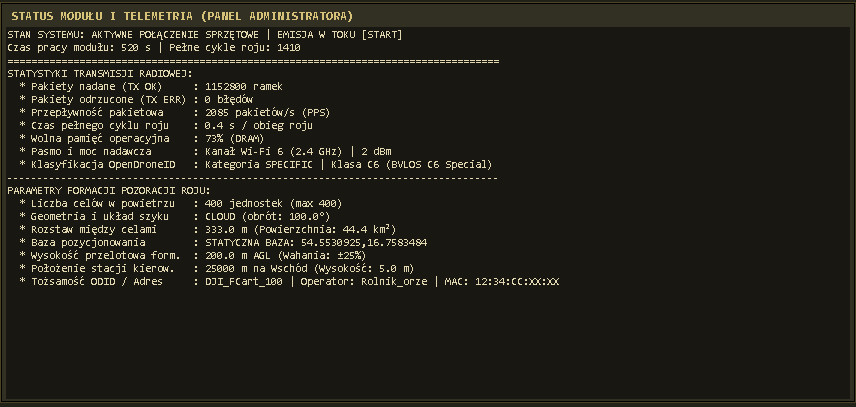
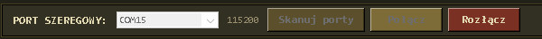

DroneGen Mx — Taktyczny Konfigurator Nadajnika ODID
Wersja oprogramowania v0.98 • Moduł pozoracji roju i sterowania radiowego.
Prezentacja Sprzętowa i Układ Urządzenia


Urządzenie DroneGen Mx zamknięte jest w obudowie wykonanej w technologii druku 3D, gwarantującej niską masę oraz odporność mechaniczną. W skład zestawu wchodzi wydajna antena typu GP 5/8 o zysku 6 dBi. System dostępny jest w wariancie z wbudowanym modułem GNSS (GPS) oraz w wersji stacjonarnej[cite: 8].
snap5 — Położenie bazowe i współrzędne
Co podlega konfiguracji: Centrum ugrupowania roju (szerokość i długość geograficzna), odsunięcie stanowiska operatora na wschód w metrach, przesunięcie północne (0–100 m w trybie GPS) oraz źródło pozycji (współrzędne statyczne lub aktywny moduł GNSS/GPS)[cite: 8].
Wpływ na generator: Definiuje globalną bazę geograficzną, wokół której algorytm rozmieszcza roje dronów. Pozwala na precyzyjne symulowanie punktu startu nalotu w odniesieniu do realnego terenu operacyjnego z dokładnością do pełnych koordynatów z Google Maps[cite: 8].

snap6 — Wysokość przelotowa i wahania
Co podlega konfiguracji: Wysokość przelotowa roju (w metrach AGL, max 2000 m), wysokość operatora (domyślnie 5 m, max 10 m), wahania wysokości roju (±% max 25%) oraz wahania rozstawu (±% max 25%)[cite: 8].
Wpływ na generator: Ustala pułap operacyjny formacji nad tłem terenu. Wprowadzenie wahaniowych zakłóceń procentowych sprawia, że pozycje celów w roju nie są statyczne, lecz dynamicznie falują, co uwiarygadnia symulację w systemach rozpoznania i uniemożliwia algorytmom C-UAS łatwe odfiltrowanie sztucznego wzorca[cite: 8].

snap7 — Geometria szyku i liczebność roju
Co podlega konfiguracji: Liczba dronów w roju (1–400 szt.), rozstaw między celami w metrach (max 500 m), kształt formacji (kwadrat, okrąg, chmura, szyk V, random, hex, spiral), kierunek obrotu formacji (0–360°) oraz pole powierzchni (zacienione, wyliczane automatycznie)[cite: 8].
Wpływ na generator: Określa gęstość ugrupowania i zajmowaną przestrzeń powietrzną w kilometrach kwadratowych. Zmiana geometrii drastycznie wpływa na strukturę rozgłaszanych pakietów Remote ID oraz obciążenie czasowe cyklu obliczeniowego procesora[cite: 8].

snap8 — Tożsamość OpenDroneID i klasyfikacja EU
Co podlega konfiguracji: UASID formacji (max 15 znaków), ID operatora, prefiks MAC Wi-Fi, typ drona (multirotor, samolot, helikopter itp.), kategoria OpenDroneID EU (Specific, Open, Certified) oraz klasa EU (domyślnie C6 BVLOS)[cite: 8].
Wpływ na generator: Wprowadza zgodność cyfrową z międzynarodowymi standardami OpenDroneID. Określa, jak urządzenie jest identyfikowane przez skanery cywilne i wojskowe oraz w jakiej klasie operacyjnej symulowany jest nalot[cite: 8].

snap9 — Radio i parametry transmisji TX
Co podlega konfiguracji: Kanał Wi-Fi w zoptymalizowanym pasmie 2.4 GHz (kanały 1, 6, 11), moc nadawcza TX w dBm zgodnie z możliwościami sprzętowymi (21, 20, 18.5, 17, 15, 13, 11, 8, 5, 2 dBm), interwały min/max (50–500 ms) oraz tryb symulacji awarii[cite: 8].
Wpływ na generator: Steruje fizyczną warstwą radiową. Interwał 50–80 ms zapewnia szybkie wykrycie, natomiast 150–250 ms zapobiega kolizjom pakietów w eterze przy dużym roju 400 celów. Regulacja mocy pozwala dostosować zasięg emisyjny[cite: 8].

snap10 — Terminal transmisji szeregowej
Co podlega konfiguracji: Podgląd strumienia logów TX/RX oraz funkcja czyszczenia bufora komunikacji z mikrokontrolerem[cite: 8].
Wpływ na generator: Umożliwia diagnostykę w czasie rzeczywistym, weryfikację poprawności przesyłanych komend protokołu szeregowego oraz natychmiastowe wychwycenie ewentualnych błędów transmisji[cite: 8].

snap11 — Status modułu i telemetria administratora
Co podlega konfiguracji: Panel podglądu statystyk nadawania: przepływność pakietowa (PPS), licznik ramek wysanych (TX OK) i odrzuconych (TX ERR), czas pełnego cyklu roju, wolna pamięć operacyjna (RAM) oraz status fixu satelitarnego GPS[cite: 8].
Wpływ na generator: Dostarcza kluczowych informacji diagnostycznych o obciążeniu systemu i efektywności emisji radiowej w warunkach polowych[cite: 8].

snap12 — Skanowanie portów szeregowych COM
Co podlega konfiguracji: Wybór aktywnego portu COM oraz inicjalizacja prędkości 115200 bps dla połączenia szeregowego z mikrokontrolerem[cite: 8].
Wpływ na generator: Umożliwia stabilne nawiązanie i utrzymanie dwukierunkowej sesji komunikacyjnej między aplikacją PC a modułem nadawczym[cite: 8].
